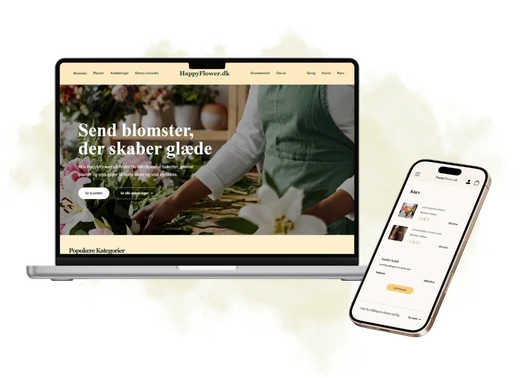
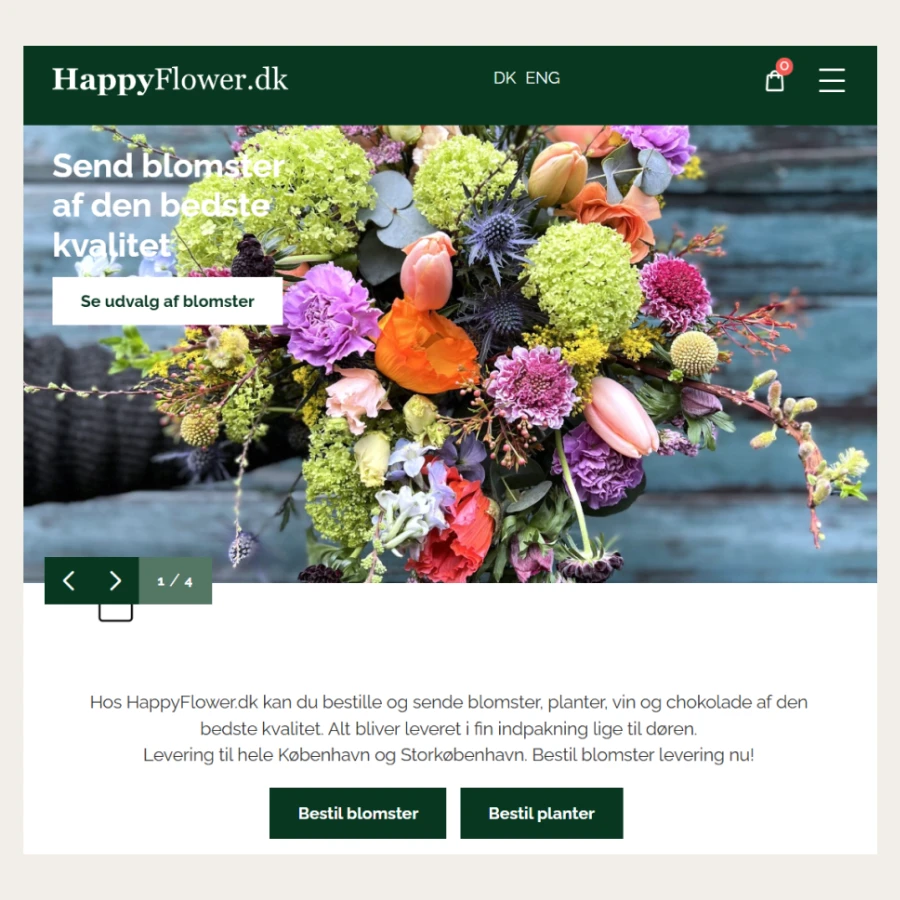
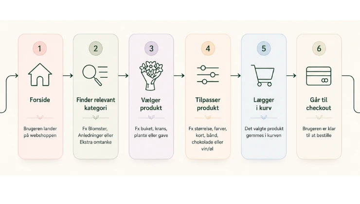
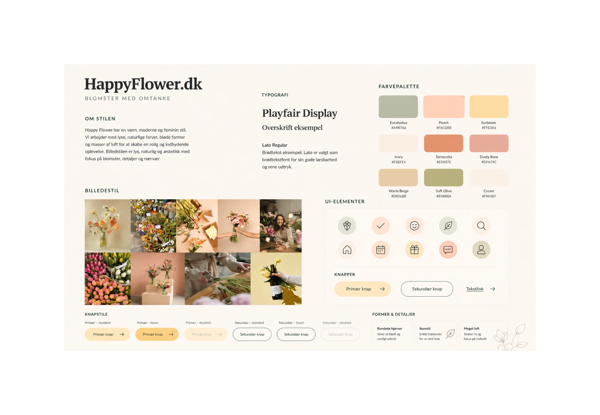
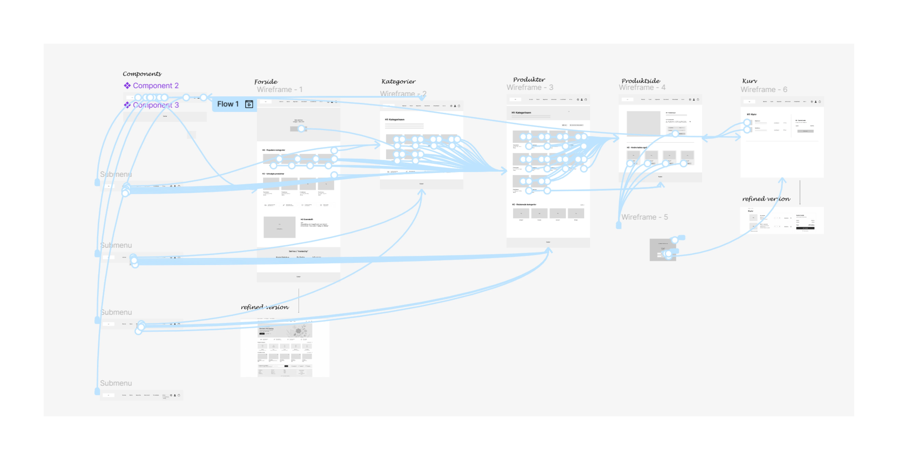
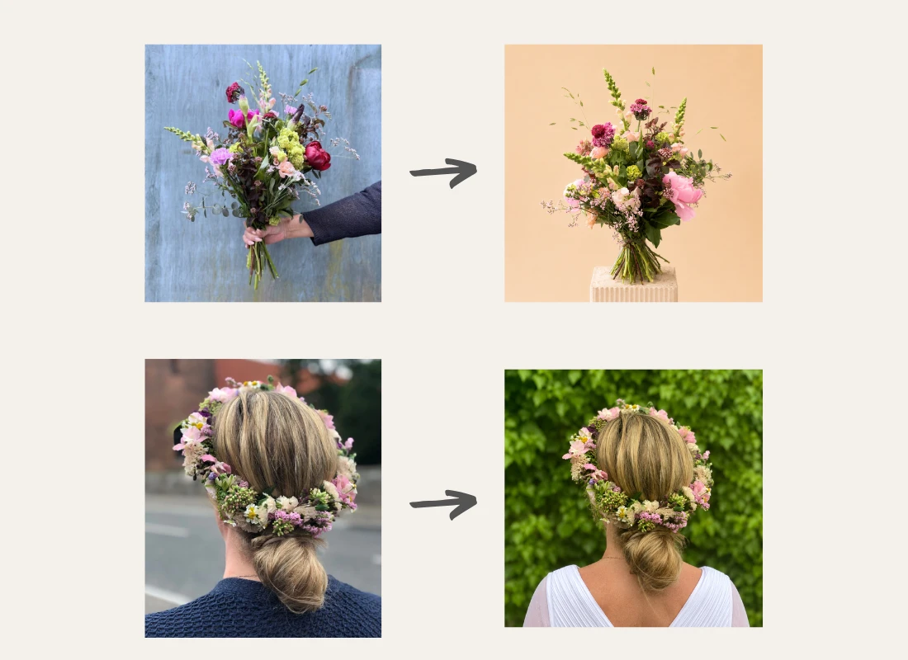
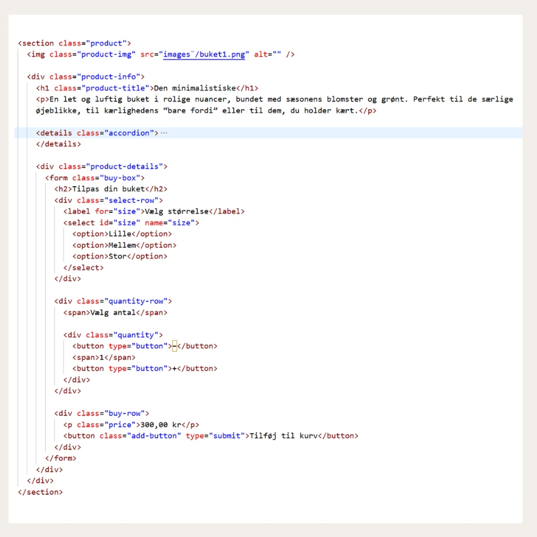
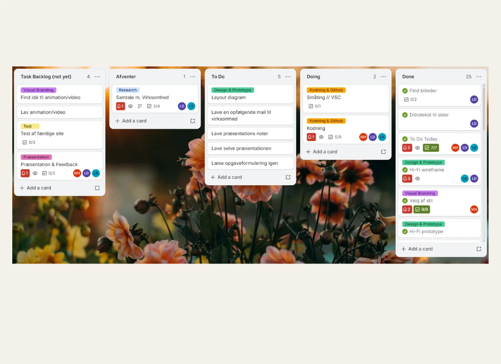

Tema 5
Grundlæggende indhold
I tema 5 arbejdede vi med grundlæggende indholdsproduktion og redesign af et virksomhedssite. Projektet samlede mange af de kompetencer, vi havde arbejdet med tidligere på semesteret: research, målgruppeforståelse, UX/UI, design, kodning. Dertil var der fokus på samarbejde, indholdsproduktion og billedredigering.

Projektet: Redesign af virksomhedssite
I dette tema arbejdede min gruppe og jeg med HappyFlower.dk, en blomsterbutik med både fysisk butik i København og online salg. Opgaven var at redesigne virksomhedens website og producere nyt digitalt indhold, der kunne understøtte brugeroplevelsen og give sitet et mere visuelt og brugervenligt udtryk.
Proces
Herunder kan processen foldes ud i mindre dele. Den viser, hvordan vi arbejdede fra research og analyse til indholdsproduktion, design, kodning og færdigt redesign.
Se evt mere dokumentation i FigJam.
Udgangspunkt og virksomhed
Vi valgte at arbejde med HappyFlower.dk, som både sælger blomster online og har en fysisk butik i København. Det eksisterende site fungerede, men vi oplevede, at det visuelle udtryk var tungt og mørkt. Dertil vurderede vi at vi kunne optimere informationshierarkiet og gøre siden mere brugervenlig.
Vores mål var at skabe et redesign, der gjorde oplevelsen mere overskuelig, inspirerende og brugervenlig, samtidig med at det stadig understøttede virksomheden og deres brand.

Research og målgruppe
Vi lavede research, interviews og analyse for at forstå både virksomheden og brugerne. Vi definerede målgruppe, brugertyper, user stories og brugerrejser, så vi kunne arbejde mere målrettet med brugeroplevelsen.
Nedenfor ses en illustreret brugerrejse.

Designretning og styletiles
Vi arbejdede med moodboards og styletiles for at finde den rigtige visuelle retning. I gruppen lavede vi hver vores moodboard og styletile ud fra forskellige værdiord, så vi kunne undersøge flere mulige retninger.
Derefter testede vi dem og brugte resultaterne til at udvikle et endeligt styletile. Det gjorde processen både kreativ og metodisk, fordi designvalgene blev baseret på research, brugerrespons og virksomhedens identitet.

Wireframes og prototype
En af mine primære roller i gruppen var designarbejdet. Jeg udarbejdede lo-fi og hi-fi wireframes til både mobil og desktop og gjorde dem til klikbare prototyper.
Arbejdet med prototyperne hjalp os med at konkretisere sidens struktur, navigation og brugerflow, før vi gik videre til kodning. Det gjorde det også lettere at teste og diskutere løsningen i gruppen samt sikrede at vi havde det samme udgangspunkt, da vi begyndte på kodningen.

Foto og indholdsproduktion
Vi producerede selv nyt indhold til sitet. Det omfattede blandt andet egne fotografier, AI-genereret video og billeder samt redigering af eksisterende billeder ved hjælp af AI.
Der var særligt fokus på at gemme billeder i WebP og i passende kvalitet, så de ikke blev for tunge for sitet.
Nedenfor ses, hvordan vi anvendte virksomhedens eksisterende billeder og redigerede dem med AI, for at opnå et look, der fremhævede produkterne.

Kodning og teknisk udvikling
Vi kodede sitet i HTML og CSS i VS Code. I processen arbejdede vi blandt andet med forms, CSS Grid, custom CSS-variabler og responsivt design. Bl.a. CSS variablerne hjalp meget med at opnå et strømlinet visuelt udtryk, på trods af at hvert gruppemedlem kodede forskellige sider.
Vi anvendte GitHub til at publicere sitet, og vi brugte Lighthouse til at teste, optimere og sammenligne det endelige site.

Test og justeringer
Vi testede vores løsning med blandt andet Likert-test, 5-sekunders-test og tænke-højt-test. Testene hjalp os med at vurdere, hvordan brugerne oplevede designet, og om sitet virkede overskueligt og troværdigt.
Testarbejdet var vigtigt, fordi det flyttede fokus fra, hvad vi selv syntes fungerede, til hvordan brugerne faktisk oplevede siden. Det gjorde vores designbeslutninger mere kvalificerede.
Samarbejde og projektstyring
I gruppen arbejdede vi struktureret med SCRUM og et Scrum board i Trello. Det hjalp os med at holde overblik over opgaver, deadlines og ansvarsområder.
Samarbejdet fungerede rigtig godt, fordi vi brugte hinandens forskellige styrker aktivt. Det gjorde processen effektiv og gav en løsning, som jeg oplevede som både gennemarbejdet og visuelt stærk.

Refleksion
Tema 5 var et af de projekter, hvor jeg tydeligt kunne mærke hvordan semestrets læring begyndte at hænge sammen - samt hvor meget forskelligt vi havde lært. Vi skulle ikke kun designe en flot side, men også forstå virksomheden, brugeren, indholdet og den tekniske løsning som en samlet digital produktion.
Den største udfordring var kontakten til virksomheden. Efter den første uge svarede de ikke længere, og derfor måtte vi justere processen. I stedet for at lade projektet gå i stå, valgte vi at lægge endnu større fokus på brugeren og målrette løsningen efter brugerbehov, research og tests.
Jeg var meget tilfreds med resultatet. Gruppen arbejdede effektivt, og vi trak på hinandens forskellige ressourcer og kompetencer. Nogle var stærke til kontakt og kommunikation, andre til struktur, design eller kode.